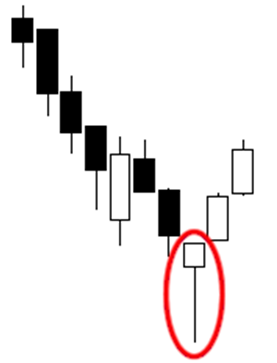

1: Candlestick Charts
What is technical analysis
- way to make probabilistic forecasts of future price behaviour
- you don’t have to be a technical trader, you can use it to look for best risk/reward long entries if you’re fundamentally bullish on an asset
- can be thought of as a risk management tool
Candlestick Anatomy
- red = closing price below opening price
- green = closing price above opening price
- OHLC = Open, High, Low, Close
Side note: lines drawn on a particular time frame are still displayed at different time frames. You can label them to give you context without having to jump back to the original time frame
Time Frames
- dictates the time period that 1 candle represents
- for beginners, focus on higher time frames (eg. Cred’s favourites are Daily and Hourly time frames)
Candle closes are very significant, especially at higher time frames -> don’t get ahead of yourself before a candle close
Candlestick Patterns
- lots of candlestick patterns are reversal patterns. Beginner mistake is to try to trade every instance regardless of context. Don’t look for candlestick patterns when price is ranging, but do when there is a strong upwards/downwards trend
- Babypips Cheat Sheet
- Patterns mentioned in video:
- Doji (Neutral)
- Shooting Star (Bearish)

- Hammar (Bullish) 
- Bullish Engulfing (Bullish)

- Bearish Engulfing (Bearish)

- Tweezer Tops (Bearish)

- Tweezer Bottoms (Bullish)

2: Risk Management
- Areas for further exploration: hedging, expectancy, laddering
- Lot of variables come down to personal preference
Manage risk so you can stay in the game
Stop Losses
 Stop Losses: an order to close a position at a certain price point/percentage to limit one’s losses
Stop Losses: an order to close a position at a certain price point/percentage to limit one’s losses
- stick to market stops, limit stops may not reach your actual target
- primary purpose is to protect a trader’s account balance when they are wrong on a trade (allows you to be profitable without having to win every time)
- based on technical analysis (not fixed percentages, R calculations etc.), place stop loss at invalidation level - point at which trader’s reason for taking the trade has been invalidated/disproved by the market aka where the price has no business of being with regard to your thesis. This will be unique depending on the setup
Risk Per Trade & Position Size
Risk per trade: what percentage of total equity a trader stands to lose per trade
- most traders trade within 2-3% of equity per trade
Calculation: total equity * risk % - does NOT mean a trader buys units worth that amount
- eg. if a trader risks $300, that means if the trader gets stopped out, they lose $300
Position size: the number of units of an instrument a trader purchases. Two pieces of information:
- risk per trade
- distance to stop loss from entry in percentage (%) terms
calculation: (total equity * risk %)/ distance to stop loss from entry - most platforms have calculators
R & Win Rate
R/risk-reward ratio: number which reflects the amount of risk undertaken relative to the reward of a trade
calculation: reward/risk
- no gold standard R
- again, based on technical analysis. Also means targets should be realistics
- TradingView has a calculator
Win rate: % which reflects how many of a trader’s total trades are winning trades over a given period of time
calculation: (winning trades/total trades) * 100
- Traders often split into two camps
- higher R lower win rate setups
- lower R higher win rate setups
- using average R, you can calculate the minimum win rate they must meet in order to be profitable
calculation:1/(1 + R) * 100`
Evolving R: the R of a trade is static upon entry, but as price moves away from entry, the R of the trade evolves and changes
- eg. price follows your thesis, misses your target by 1-2 points and then comes all the way back and stops you out for breakeven.
- recalculate R if it seems like the trade is changing
Handling Drawdown
idea that the market will, at some point, hand your ass to you is just about the only certainity in trading
Make sure a losing streak will not wipe you out:

Potential drawdown mitigation checklist:
- Can your win rate and R take a losing streak on the chin? See table 2.
- Do you have trading rules/some sort of system for taking trades? Or are you gambling?
- Have you been following your trading rules?
- What links your losing trades? What links your winning trades?
- Do you simply need a break? Are you punting FOMO/revenge trades?
- Have you considered reducing your risk and increasing the quality of setups you take?
Margin
Margin: borrowing capital from your borker to open a position larger than one would other be able to
- Cross margin: your entire available balance will be used to avoid liquidation (aka liquidation = your entire account gets nuked)
- isolated margin: fixed margin for a certain position (aka liquidation = balance used to open position gets nuked) Liquidations: the price at which your losses are such that the exchanges will forcibly close your position
Position size calculation does not change
- risk must still be the same
3: Order Flow
market tend to make a lot more sense once you get into the mindsset of institutional order flow
Problems Institutional Traders Face
- trading a lot of size, there are issues with slippage and front running (dedicated people looking for your asks/bids and not letting you get filled eg. ladder, order book, chart)
- how do institutional traders get around this issue? By engineering liquidity
Liquidity
Longs = short liquidity (what do you need to go long? -> shorts)
Shorts = long liquidity (what do you need to go short? -> longs)
Going back to institutional trader dilemma:
- if you want sellers, you make the market look like it’s going to shit itself
- if you want buyers, you make the market look like it’s going to go vertical
Liquidity Pools: areas where there are likely to be a lot of limit orders/stops
- pending limit orders = untapped liquidity, which is released/triggered by price trading through a certain area
- how to identify liquidity pools? simple test: where are retail traders taught to put their stops?
- below swing lows
- above swing highs
- above range highs
- below range lows
- how to filter probable liquidity pools from less probable liquidity pools?
- Deep swing highs/lows → ones that stand out on the chart as swing points
- Swing points visible on the higher time frames tend to work better because more traders see them → more orders build up above/below them (Cred checks 15M, 1H, 1D)
- Extended consolidation ranges (orders on both sides of the range; traders trying to catch the breakout)
- HTF highs and lows (1D, 1W, even 1M)
- Equal highs/lows
- Always ask yourself: where are retail traders’ stops resting?
Stop Hunting
Stop Hunting: where price trades through an area where retail stops were resting before
- example of how a market takes out a low/“break support” before proceeding higher. Two forms of stops:
- stop losses of those who are long. When triggered, turn into market orders to sell
- limit order of those who are waiting to short. When triggered, turn into market order to sell
- The result is sell orders flood the market, creating engineered long liquidity. Institutions can find retail traders to buy from. Then they take the market higher
- In fact, sometimes institutional players will sometimes sell in order to force the market to go down, even if they want to long, because they know if they take out a specific low, there is a ton of liquidity that they can pick up
- retail traders' stops create the liquidity pools for the institutional traders
- this is often why markets will take out a low before going vertical or take out a high before falling off a cliff. How do you distinguish? You can’t with 100% accuracy, which is why it works, but there are things you can do:
- If possible, avoid putting your stops (both stop losses and limit orders) at obvious liquidity pool targets as discussed earlier
- Monitor the price action: if the move is a stop run, price will often give you a reaction when it takes out the high/low (tall wicks, slow down in momentum, failure to close above/below on a HTF, etc.)
- If you’re waiting for a clean break:
- Clean HTF candle close through the level e.g. H1/H4
- Safer: wait for the breakdown + bid/offer the retest
- Divergence
- Keeping a trading journal
Sidenote: this probably happens more right before big moves. There’s probably leading indicators for big moves, like when you could see somebody was consistently buying over weeks (which turned out to be Saylor buying his BTC through Coinbase OTC). Obviously, he’s not a trader but there’s probably data that would indicate institutions are active in the markets.
4: Horizontal Support/Resistance
- Art form, not a science when drawing levels
- Don’t try to force levels where they’re not clear - highest probability setups will come from clear setups that are worth waiting for
TradingView tips:
- horizontal line tool (Alt/Option+H)
- Magnet mode (snap)
- changing visibility so that lines are only visible on certain time frames
Resistance: area where we expect price to have a hard time going higher
Support: area where we expect price to have a hard time going lower
Two on the right on S/R flips:
Principle 1 - S/R Flips
S/R levels flip when broken by price
- A support level that is broken = resistance
- A resistance level that is broken = support
broken: a clean candle close through the level
Principle 2 - Recurring Tests
The more a level is test by price from the same direction, the weaker it becomes
- Think of it as more buyers/sellers getting absorbed with each test until eventually, during the nth time, there’s not enough buyers/sellers to hold that level and it breaks
However, it becomes strong if/when the S/R flips
Principle 3 - First Test Best Test
Corollary of Principle 2: the highest probability level trade is the first test of a broken from the other side
- first test of a broken resistance level (expected support)
- first test of a broken support level (expected resistance)
Strong Level Criteria
- High number of touches (once the level has been broken)
- More touches from the same direction = weaker level as buyers/sellers absorbed
- But once the level is broken and price is on the other side, it is fresh
- Violent touches (once the level has been broken)
- Violence = how strongly price reacted upon testing the level
- More violence i.e. bigger swings away = better
- Based on recent price action
- Extremely important so you don’t use levels that were good in the past but have now been washed
- Read the chart from right to left
- Interested in what recent market participants are doing
- Long duration (once the level has been broken)
- Levels that were respected as S/R for longer tend to be stronger
- E.g. level that was resistance for several weeks is likely to be a stronger support (when broken) than a level that was resistance for only a few hours
Drawing tip: candle closes/body doesn’t really matter, but refine your level by making sure it is hinged on the most recent lows before break downwards/most recent highs before break upwards
Trading the Inverse: buying broken resistance & selling broken support
Types of Retests
Two types of retests:
- Micro retests: lower time frames, occur virtually immediately after a level is broken. Lower probability
- Rounded retests: higher time frame, time and space between break and retest. Higher probability
Time Frames
HTF are more reliable, but are way less frequent so you have to balance between quality and quantity
- Cred uses H1 and D1 time frames
5: Market Structure
Not a canonical view (if such a thing exists)
Defining Market Structure
Sequence of (proximate) highs and lows in a given instrument
Sequence
- Bullish MS = higher highs and higher lows
- bearish MS = lower highs and lower lows
Swing Low: low with a HL on both sides Swing high: high with a LH on both sides
Consider:
- recency
- significance of move following that high/low
- what’s the obvious/most outstanding high/low?
- if it doesn’t look like a clear swing point from first glance, it likely won’t be the best structure
Note: Can be complimented with trends eg. HTF bull trend sees a LTF MSB = opportunity to dip buy etc.
Selecting highs/low as MS anchors
-
use S/R as starting point
-
is the swing high/low confluent with another key level (eg. S/R, candle open)
-
focus on swing points that are visible and significant to the largest number of participants (low hanging fruit)
-
No unified MS per time frame
-
Don’t chase every MSB (sometimes it is a weak signal in an overridingly strong trend). Don’t become a breakout/breakdown chaser under the guise of MS
Identifying Breaks in Market Structure
A shift in the sequence of highs/lows in the opposite direction
- buillish MSB: sequence of LH violated by the HH
- bearish MSB: sequence of HL violated by a LL
There are different definitions, this is just Cred’s (if it’s good enough for Cred, it’s good enough for me)
Candle bodies vs wicks: doesn’t matter, just be consistent.
- Variant that Cred uses: Bodies for MS and closes above/below for MSB
Next Steps:
- learn more candlestick patterns
- research into hedging, expectancy, laddering risk management
- funding
- liquidations data and stats for the market
- bullish divergence
- indicators for when big players are trading/active in the markets